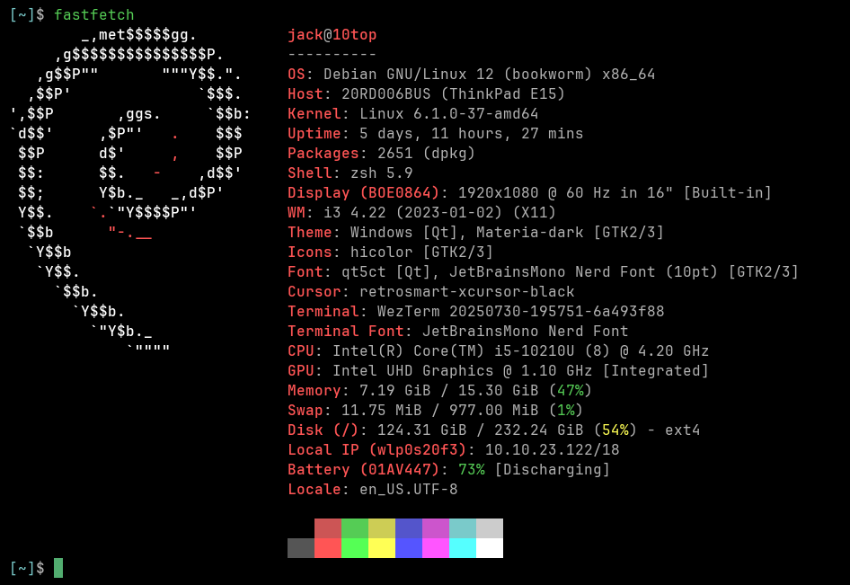

Week 3 – Walking Instead of Driving: Why I'm Blogging in the AI Age
Hello, my name is Jack ten Bosch, and welcome to my blog for Learning with Digital Technology at San Francisco State.
For week three, we were asked to create a new blog, make it personal, and use it as a reflective journal to share our perspective on learning 21st-century skills through digital technologies. This is right in my wheelhouse. I spend a lot of time with tech, so this blog is a way to share what I've picked up along the way as both a student and someone who's constantly experimenting with new tools.
Writing in the Age of AI
One thing I've been leaning into lately is writing without AI doing the heavy lifting. It's easy to feed an idea into a large language model and get a polished piece back in seconds. But that's like choosing to drive everywhere. Driving is quick, but when you walk, you build endurance, you notice details about your surrondings, and your body gets stronger over time.
Writing on your own works the same way. At first it can feel slow or awkward, and thats exactly what sharpens the mind. Over time, the habit of shaping sentences gave me a deeper grasp of my ideas—something that an Ai generated paragraph just can't beat.
Why Blogging Fits
And that's why blogging matters to me. It's a place to build a record of my thinking. Writing forces me to slow down and make connections I might skip if I were only posting quick takes. And it's public, which is powerful in a professional sense. Future employers can see how one thinks and problem-solve, not just the bullet points on a resume.
About Me
A little background: I'm Jack ten Bosch, a Business Analytics major in the BSBA program at San Francisco State University. I'm a big tech enthusiast with a focus on AI, data, and machine learning. I'm also dabbling in software development—right now I'm building a transcription service I plan to release soon.
On the hardware side, I run Debian 12 Bookworm on a ThinkPad e15 that I've upgraded myself, so yes, I'm a bit of a nerd.

Outside of tech, I love snowboarding, hitting the gym, and spending time with my friends. I grew up in the Bay Area and think it's one of the most best places to live (I might be biased).

Wrapping Up
Starting this blog feels less like an obligation and more like a chance to invest in my own ideas. I know that by writing, revising, and reflecting, I'll build something I can come back to later and see how my thinking has evolved. Thanks for stopping by, and I hope you enjoy following along as I keep exploring technology, learning, and everything in between.